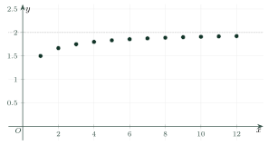

SequencesDãy số
Grade 11 · Topic: SequencesLớp 11 · Chủ đề: Dãy số. Cấp số cộng và cấp số nhân
1Lesson IntroductionGiới thiệu bài học
Learning goalsMục tiêu bài học
By the end of this lesson you can:
Sau bài học này, em có thể:
say what a sequence is and find its terms;
nêu được dãy số là gì và tìm các số hạng của nó;
give a sequence by a formula, a description or a recursive formula;
cho dãy số bằng công thức, bằng mô tả hoặc bằng công thức truy hồi;
decide whether a sequence is increasing or decreasing;
xét được dãy số tăng hay giảm;
decide whether a sequence is bounded.
xét được dãy số có bị chặn hay không.
2Mathematical VocabularyTừ vựng Toán học
sequence – numbers listed in a fixed order: \(u_1,u_2,u_3,\dots\)
Dãy số – các số xếp theo một thứ tự: \(u_1,u_2,u_3,\dots\)
term – one number of the sequence; \(u_n\) is the n-th term.
Số hạng – một số của dãy; \(u_n\) là số hạng thứ n.
general term – the formula for \(u_n\) in terms of n.
Số hạng tổng quát – công thức tính \(u_n\) theo n.
recursive formula – gives the first term and a rule for the next term from the previous ones.
Công thức truy hồi – cho số hạng đầu và quy tắc tính số hạng sau từ các số hạng trước.
finite sequence – has a last term.
Dãy số hữu hạn – có số hạng cuối cùng.
infinite sequence – has no last term.
Dãy số vô hạn – không có số hạng cuối cùng.
increasing sequence – \(u_{n+1}>u_n\) for every n.
Dãy số tăng – \(u_{n+1}>u_n\) với mọi n.
decreasing sequence – \(u_{n+1}\lt u_n\) for every n.
Dãy số giảm – \(u_{n+1}\lt u_n\) với mọi n.
bounded above – there is M with \(u_n\le M\) for every n.
Bị chặn trên – có M để \(u_n\le M\) với mọi n.
bounded below – there is m with \(u_n\ge m\) for every n.
Bị chặn dưới – có m để \(u_n\ge m\) với mọi n.
bounded sequence – bounded above and bounded below.
Dãy số bị chặn – vừa bị chặn trên vừa bị chặn dưới.
3Useful English PhrasesCụm từ tiếng Anh thường gặp
Find the first five terms.
Tìm năm số hạng đầu.
Find the general term.
Tìm số hạng tổng quát.
Is the sequence increasing or decreasing?
Dãy số tăng hay giảm?
Is the sequence bounded?
Dãy số có bị chặn không?
The sequence is defined by…
Dãy số được xác định bởi…
4Prerequisite ReviewÔn tập kiến thức nền
Evaluating a formula. To find the value of \(f(n)\), replace n by the number. For \(f(n)=2n+1\), \(f(3)=7\).
Tính giá trị biểu thức. Để tính \(f(n)\), thay n bằng số đã cho. Với \(f(n)=2n+1\) thì \(f(3)=7\).
Comparing two numbers. To compare a and b, look at the sign of \(a-b\).
So sánh hai số. Để so sánh a và b, xét dấu của \(a-b\).
Natural numbers. \(n=1,2,3,\dots\) are positive integers.
Số tự nhiên. \(n=1,2,3,\dots\) là các số nguyên dương.
5TheoryLý thuyết
5.1 What is a sequence?Dãy số là gì?
A sequence is a list of numbers in a fixed order. We write \(u_1,u_2,u_3,\dots\) or \((u_n)\); \(u_1\) is the first term and \(u_n\) is the n-th term. A sequence with a last term is a finite sequence; if it never ends it is an infinite sequence.
Dãy số là một danh sách các số theo thứ tự cố định. Ta viết \(u_1,u_2,u_3,\dots\) hay \((u_n)\); \(u_1\) là số hạng đầu, \(u_n\) là số hạng thứ n. Dãy có số hạng cuối là dãy số hữu hạn; dãy không kết thúc là dãy số vô hạn.
DefinitionĐịnh nghĩa
A sequence is a function whose domain is the positive integers: \(n\mapsto u_n\). Example: \(u_n=2n+1\) gives \(3,5,7,9,\dots\)
Dãy số là hàm số xác định trên tập các số nguyên dương: \(n\mapsto u_n\). Ví dụ \(u_n=2n+1\) cho \(3,5,7,9,\dots\)
5.2 Ways to give a sequenceCác cách cho một dãy số
Three waysBa cách cho dãy số
1. By a formula for the general term: \(u_n=\dfrac{n}{n+1}\).
1. Bằng công thức của số hạng tổng quát: \(u_n=\dfrac{n}{n+1}\).
2. By a description: \(u_n\) is the n-th prime number: \(2,3,5,7,11,\dots\)
2. Bằng mô tả: \(u_n\) là số nguyên tố thứ n: \(2,3,5,7,11,\dots\)
3. By a recursive formula: give the first term and the rule to get the next one. Example: \(u_1=1,\ u_{n+1}=u_n+2\) gives \(1,3,5,7,\dots\)
3. Bằng công thức truy hồi: cho số hạng đầu và quy tắc suy ra số hạng sau. Ví dụ \(u_1=1,\ u_{n+1}=u_n+2\) cho \(1,3,5,7,\dots\)
The Fibonacci sequenceDãy Fibonacci
\(u_1=1,\ u_2=1,\ u_{n+2}=u_{n+1}+u_n\). Each term is the sum of the two before it: \(1,1,2,3,5,8,13,\dots\)
\(u_1=1,\ u_2=1,\ u_{n+2}=u_{n+1}+u_n\). Mỗi số hạng bằng tổng hai số hạng đứng trước: \(1,1,2,3,5,8,13,\dots\)
We can draw a sequence as points \((n;u_n)\) in the plane. For \(u_n=\dfrac{2n+1}{n+1}\) the points rise and stay below the line \(y=2\).
Ta có thể vẽ dãy số bằng các điểm \((n;u_n)\) trên mặt phẳng. Với \(u_n=\dfrac{2n+1}{n+1}\) các điểm đi lên và luôn nằm dưới đường \(y=2\).

5.3 Increasing and decreasing sequencesDãy số tăng, dãy số giảm
Monotonic sequencesDãy số đơn điệu
\((u_n)\) is an increasing sequence if \(u_{n+1}>u_n\) for every n.
\((u_n)\) là dãy số tăng nếu \(u_{n+1}>u_n\) với mọi n.
\((u_n)\) is a decreasing sequence if \(u_{n+1}\lt u_n\) for every n.
\((u_n)\) là dãy số giảm nếu \(u_{n+1}\lt u_n\) với mọi n.
Method: find the sign of \(u_{n+1}-u_n\). A sequence can be neither, for example \(u_n=(-1)^n\).
Cách làm: xét dấu của \(u_{n+1}-u_n\). Có dãy không tăng cũng không giảm, ví dụ \(u_n=(-1)^n\).
5.4 Bounded sequencesDãy số bị chặn
Bounded above and belowBị chặn trên và bị chặn dưới
\((u_n)\) is bounded above if there is a number M with \(u_n\le M\) for every n.
\((u_n)\) bị chặn trên nếu có số M để \(u_n\le M\) với mọi n.
\((u_n)\) is bounded below if there is a number m with \(u_n\ge m\) for every n.
\((u_n)\) bị chặn dưới nếu có số m để \(u_n\ge m\) với mọi n.
If both hold, it is a bounded sequence: \(m\le u_n\le M\).
Nếu cả hai đều đúng thì đó là dãy số bị chặn: \(m\le u_n\le M\).
Watch out!Lưu ý
Checking a few terms is not a proof. To show a sequence is increasing, prove \(u_{n+1}-u_n>0\) for every n.
Thử vài số hạng chưa phải là chứng minh. Để chứng tỏ dãy tăng, phải chứng minh \(u_{n+1}-u_n>0\) với mọi n.
6Worked ExamplesVí dụ có lời giải
ExampleVí dụ 1BasicCơ bản – First terms from a formulaCác số hạng đầu từ công thức
Find the first five terms of \(u_n=\dfrac{2n+1}{n+2}\).
Tìm năm số hạng đầu của dãy \(u_n=\dfrac{2n+1}{n+2}\).
Analysis: Replace n by 1, 2, 3, 4, 5.
Phân tích: Thay n lần lượt bằng 1, 2, 3, 4, 5.
\(u_1=\dfrac33=1,\ u_2=\dfrac54,\ u_3=\dfrac75\).
\(u_1=\dfrac33=1,\ u_2=\dfrac54,\ u_3=\dfrac75\).
\(u_4=\dfrac96=\dfrac32,\ u_5=\dfrac{11}{7}\).
\(u_4=\dfrac96=\dfrac32,\ u_5=\dfrac{11}{7}\).
ExampleVí dụ 2BasicCơ bản – A recursive sequenceDãy số cho bằng truy hồi
A sequence has \(u_1=2\) and \(u_{n+1}=3u_n-1\). Find \(u_2,u_3,u_4\).
Dãy số có \(u_1=2\) và \(u_{n+1}=3u_n-1\). Tìm \(u_2,u_3,u_4\).
Analysis: Use each term to get the next one.
Phân tích: Dùng mỗi số hạng để tính số hạng kế tiếp.
\(u_2=3\cdot2-1=5\).
\(u_2=3\cdot2-1=5\).
\(u_3=3\cdot5-1=14\).
\(u_3=3\cdot5-1=14\).
\(u_4=3\cdot14-1=41\).
\(u_4=3\cdot14-1=41\).
ExampleVí dụ 3IntermediateTrung bình – Increasing or decreasing?Tăng hay giảm?
Decide whether each sequence is increasing, decreasing or neither:
(a) \(u_n=\dfrac{n}{n+1}\);
(b) \(u_n=\dfrac1n\);
(c) \(u_n=(-1)^n\).
Xét mỗi dãy số tăng, giảm hay không đơn điệu:
(a) \(u_n=\dfrac{n}{n+1}\);
(b) \(u_n=\dfrac1n\);
(c) \(u_n=(-1)^n\).
Analysis: Find the sign of \(u_{n+1}-u_n\).
Phân tích: Xét dấu của \(u_{n+1}-u_n\).
(a) \(\dfrac{n+1}{n+2}-\dfrac{n}{n+1}=\dfrac{1}{(n+1)(n+2)}>0\): increasing.
(a) \(\dfrac{n+1}{n+2}-\dfrac{n}{n+1}=\dfrac{1}{(n+1)(n+2)}>0\): dãy tăng.
(b) \(\dfrac{1}{n+1}-\dfrac1n=\dfrac{-1}{n(n+1)}\lt 0\): decreasing.
(b) \(\dfrac{1}{n+1}-\dfrac1n=\dfrac{-1}{n(n+1)}\lt 0\): dãy giảm.
(c) The terms are \(-1,1,-1,1,\dots\): neither.
(c) Các số hạng là \(-1,1,-1,1,\dots\): không tăng, không giảm.
(a) increasing;
(b) decreasing;
(c) neither.
(a) tăng;
(b) giảm;
(c) không đơn điệu.
ExampleVí dụ 4IntermediateTrung bình – Bounded or not?Bị chặn hay không?
Is the sequence bounded?
(a) \(u_n=\dfrac{2n+1}{n+1}\);
(b) \(u_n=n^2\).
Dãy số có bị chặn không?
(a) \(u_n=\dfrac{2n+1}{n+1}\);
(b) \(u_n=n^2\).
Analysis: Rewrite the formula to see its range of values.
Phân tích: Biến đổi công thức để thấy khoảng giá trị.
(a) \(u_n=2-\dfrac{1}{n+1}\). Since \(0\lt \dfrac1{n+1}\le\dfrac12\), we get \(\dfrac32\le u_n\lt 2\).
(a) \(u_n=2-\dfrac{1}{n+1}\). Vì \(0\lt \dfrac1{n+1}\le\dfrac12\) nên \(\dfrac32\le u_n\lt 2\).
So (a) is bounded above and below (also \(1\le u_n\lt 2\) works for \(n\ge1\)).
Vậy (a) bị chặn trên và bị chặn dưới.
(b) \(n^2\ge1\): bounded below, but \(n^2\) grows without limit, so not bounded above.
(b) \(n^2\ge1\): bị chặn dưới, nhưng \(n^2\) lớn tùy ý nên không bị chặn trên.
(a) bounded;
(b) not bounded (only bounded below).
(a) bị chặn;
(b) không bị chặn (chỉ bị chặn dưới).
ExampleVí dụ 5AdvancedNâng cao – Seats in a theatreSố ghế trong nhà hát
A theatre has 20 seats in row 1 and each next row has 2 more seats.
(a) How many seats are in row 10?
(b) Which row has 50 seats?
Một nhà hát có 20 ghế ở hàng 1 và mỗi hàng sau nhiều hơn hàng trước 2 ghế.
(a) Hàng 10 có bao nhiêu ghế?
(b) Hàng nào có 50 ghế?
Analysis: Write the general term: \(u_n=20+2(n-1)\).
Phân tích: Viết số hạng tổng quát: \(u_n=20+2(n-1)\).
\(u_n=20+2(n-1)=2n+18\).
\(u_n=20+2(n-1)=2n+18\).
(a) \(u_{10}=2\cdot10+18=38\).
(a) \(u_{10}=2\cdot10+18=38\).
(b) \(2n+18=50\Rightarrow n=16\).
(b) \(2n+18=50\Rightarrow n=16\).
(a) 38 seats;
(b) row 16.
(a) 38 ghế;
(b) hàng 16.
7PracticeBài tập luyện tập
A. Multiple ChoiceA. Trắc nghiệm
A sequence has \(u_n=3n-2\). What is \(u_4\)?
Dãy số có \(u_n=3n-2\). Tính \(u_4\).
Answer: b. \(3\cdot4-2=10\).
Đáp án b. \(3\cdot4-2=10\).
\(u_1=2,\ u_{n+1}=u_n+3\). What is \(u_4\)?
\(u_1=2,\ u_{n+1}=u_n+3\). Tính \(u_4\).
Answer: c. \(2,5,8,11\).
Đáp án c. \(2,5,8,11\).
Which describes \(u_n=n+3\)?
Dãy \(u_n=n+3\) là dãy nào?
Answer: a. \(u_{n+1}-u_n=1>0\).
Đáp án a. \(u_{n+1}-u_n=1>0\).
B. True or FalseB. Đúng hoặc sai
The sequence \(u_n=2n-1\) is increasing.
Dãy số \(u_n=2n-1\) là dãy tăng.
True: \(u_{n+1}-u_n=2>0\).
Đúng: \(u_{n+1}-u_n=2>0\).
The sequence \(u_n=n^2\) is bounded above.
Dãy số \(u_n=n^2\) bị chặn trên.
False: \(n^2\) grows without limit.
Sai: \(n^2\) lớn tùy ý.
C. Short AnswerC. Trả lời ngắn
\(u_1=1,\ u_{n+1}=u_n+4\). Find \(u_5\).
\(u_1=1,\ u_{n+1}=u_n+4\). Tìm \(u_5\).
Enter a whole number.
Nhập một số nguyên.
Answer: 17: \(1,5,9,13,17\).
Đáp số: 17: \(1,5,9,13,17\).
For \(u_n=3n-2\), which n gives \(u_n=25\)?
Với \(u_n=3n-2\), n bằng bao nhiêu để \(u_n=25\)?
Enter a whole number.
Nhập một số nguyên.
Answer: 9: \(3n-2=25\Rightarrow n=9\).
Đáp số: 9: \(3n-2=25\Rightarrow n=9\).
A. Multiple ChoiceA. Trắc nghiệm
A sequence has \(u_n=n^2+1\). What is \(u_5\)?
Dãy số có \(u_n=n^2+1\). Tính \(u_5\).
Answer: c. \(25+1=26\).
Đáp án c. \(25+1=26\).
\(u_1=1,\ u_{n+1}=2u_n+1\). What is \(u_4\)?
\(u_1=1,\ u_{n+1}=2u_n+1\). Tính \(u_4\).
Answer: c. \(1,3,7,15\).
Đáp án c. \(1,3,7,15\).
Which describes \(u_n=\dfrac1n\)?
Dãy \(u_n=\dfrac1n\) là dãy nào?
Answer: b. \(u_{n+1}-u_n=-\dfrac{1}{n(n+1)}\lt 0\).
Đáp án b. \(u_{n+1}-u_n=-\dfrac{1}{n(n+1)}\lt 0\).
B. True or FalseB. Đúng hoặc sai
The sequence \(u_n=\dfrac{n}{n+1}\) is decreasing.
Dãy số \(u_n=\dfrac{n}{n+1}\) là dãy giảm.
False: it is increasing, \(u_{n+1}-u_n=\dfrac{1}{(n+1)(n+2)}>0\).
Sai: nó là dãy tăng, \(u_{n+1}-u_n=\dfrac{1}{(n+1)(n+2)}>0\).
The sequence \(u_n=\dfrac1n\) is bounded.
Dãy số \(u_n=\dfrac1n\) bị chặn.
True: \(0\lt u_n\le1\).
Đúng: \(0\lt u_n\le1\).
C. Short AnswerC. Trả lời ngắn
\(u_1=3,\ u_{n+1}=2u_n\). Find \(u_4\).
\(u_1=3,\ u_{n+1}=2u_n\). Tìm \(u_4\).
Enter a whole number.
Nhập một số nguyên.
Answer: 24: \(3,6,12,24\).
Đáp số: 24: \(3,6,12,24\).
For \(u_n=2n+5\), which n gives \(u_n=31\)?
Với \(u_n=2n+5\), n bằng bao nhiêu để \(u_n=31\)?
Enter a whole number.
Nhập một số nguyên.
Answer: 13: \(2n+5=31\Rightarrow n=13\).
Đáp số: 13: \(2n+5=31\Rightarrow n=13\).
A. Multiple ChoiceA. Trắc nghiệm
A sequence has \(u_n=2^n-1\). What is \(u_5\)?
Dãy số có \(u_n=2^n-1\). Tính \(u_5\).
Answer: c. \(32-1=31\).
Đáp án c. \(32-1=31\).
\(u_1=2,\ u_{n+1}=3u_n-1\). What is \(u_4\)?
\(u_1=2,\ u_{n+1}=3u_n-1\). Tính \(u_4\).
Answer: c. \(2,5,14,41\).
Đáp án c. \(2,5,14,41\).
Which describes \(u_n=(-1)^n\)?
Dãy \(u_n=(-1)^n\) là dãy nào?
Answer: c. The terms are \(-1,1,-1,1,\dots\)
Đáp án c. Các số hạng là \(-1,1,-1,1,\dots\)
B. True or FalseB. Đúng hoặc sai
The sequence \(u_n=(-1)^n\) is bounded.
Dãy số \(u_n=(-1)^n\) bị chặn.
True: \(-1\le u_n\le1\).
Đúng: \(-1\le u_n\le1\).
The sequence \(u_n=-n\) is bounded above.
Dãy số \(u_n=-n\) bị chặn trên.
True: \(u_n\le-1\) for every n.
Đúng: \(u_n\le-1\) với mọi n.
C. Short AnswerC. Trả lời ngắn
Fibonacci: \(u_1=u_2=1,\ u_{n+2}=u_{n+1}+u_n\). Find \(u_7\).
Dãy Fibonacci: \(u_1=u_2=1,\ u_{n+2}=u_{n+1}+u_n\). Tìm \(u_7\).
Enter a whole number.
Nhập một số nguyên.
Answer: 13: \(1,1,2,3,5,8,13\).
Đáp số: 13: \(1,1,2,3,5,8,13\).
For \(u_n=n^2-1\), which positive n gives \(u_n=80\)?
Với \(u_n=n^2-1\), số nguyên dương n nào cho \(u_n=80\)?
Enter a whole number.
Nhập một số nguyên.
Answer: 9: \(n^2=81\).
Đáp số: 9: \(n^2=81\).
8Common MistakesLỗi thường gặp
Index shift. Taking \(u_0\) as the first term. Here the first term is \(u_1\).
Lệch chỉ số. Coi \(u_0\) là số hạng đầu. Ở đây số hạng đầu là \(u_1\).
Recursive formula. Using \(u_n\) instead of \(u_{n-1}\) or mixing \(u_{n+1}\) with \(u_n+1\). \(u_{n+1}\) means the next term.
Công thức truy hồi. Nhầm \(u_{n+1}\) với \(u_n+1\). \(u_{n+1}\) là số hạng kế tiếp.
A few terms are not a proof. Trying \(n=1,2,3\) and saying the sequence is increasing.
Vài số hạng chưa là chứng minh. Thử \(n=1,2,3\) rồi kết luận dãy tăng.
Wrong sign. Mistakes in \(u_{n+1}-u_n\). Write \(u_{n+1}\) fully by replacing n with \(n+1\).
Sai dấu. Sai khi tính \(u_{n+1}-u_n\). Viết đầy đủ \(u_{n+1}\) bằng cách thay n bằng \(n+1\).
Bounded. Saying \(u_n=n^2\) is bounded because it has a smallest term. It must be bounded above and below.
Bị chặn. Cho rằng \(u_n=n^2\) bị chặn vì có số hạng nhỏ nhất. Phải bị chặn cả trên và dưới.
9Lesson SummaryTổng kết
A sequence is a function on the positive integers; it is given by a formula, a description or a recursive formula.
Dãy số là hàm số trên tập các số nguyên dương; cho bằng công thức, bằng mô tả hoặc bằng công thức truy hồi.
Increasing: \(u_{n+1}>u_n\) for all n; decreasing: \(u_{n+1}\lt u_n\) for all n. Study the sign of \(u_{n+1}-u_n\).
Tăng: \(u_{n+1}>u_n\) với mọi n; giảm: \(u_{n+1}\lt u_n\) với mọi n. Xét dấu \(u_{n+1}-u_n\).
Bounded above: \(u_n\le M\); bounded below: \(u_n\ge m\); bounded: both.
Bị chặn trên: \(u_n\le M\); bị chặn dưới: \(u_n\ge m\); bị chặn: cả hai.
Key English phrases: find the first five terms; find the general term; is the sequence increasing or decreasing; is the sequence bounded.
Cụm tiếng Anh cần nhớ: find the first five terms (tìm năm số hạng đầu); find the general term (tìm số hạng tổng quát); increasing or decreasing (tăng hay giảm); bounded (bị chặn).